ERARBEITEN
Finde oder erschließe Informationen im Lernprogramm.
Pilotprojekt · Selbstständiges Lernen
Du untersuchst, wie Stoffe im Wald zurückgeführt werden, wie Tiere unterschiedliche ökologische Nischen nutzen und wie menschliche Eingriffe das Waldsystem verändern.
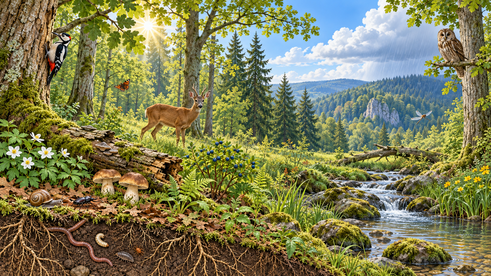
Arbeitsblatt 1: Stoffkreislauf und ökologische Nische
Arbeitsblatt 2: Menschliche Eingriffe in den Wald
Arbeite die Lernschritte der Reihe nach durch. Deine Freitexte und dein besuchter Lernweg werden auf diesem Gerät gespeichert.
Finde oder erschließe Informationen im Lernprogramm.
Übernimm das angezeigte Ergebnis 1:1 ins Arbeitsblatt.
Erkläre, begründe oder formuliere selbstständig.
Kontrolliere eine Antwort oder nutze einen Kriteriencheck.
Kapitel 1 · Stoffe kehren zurück
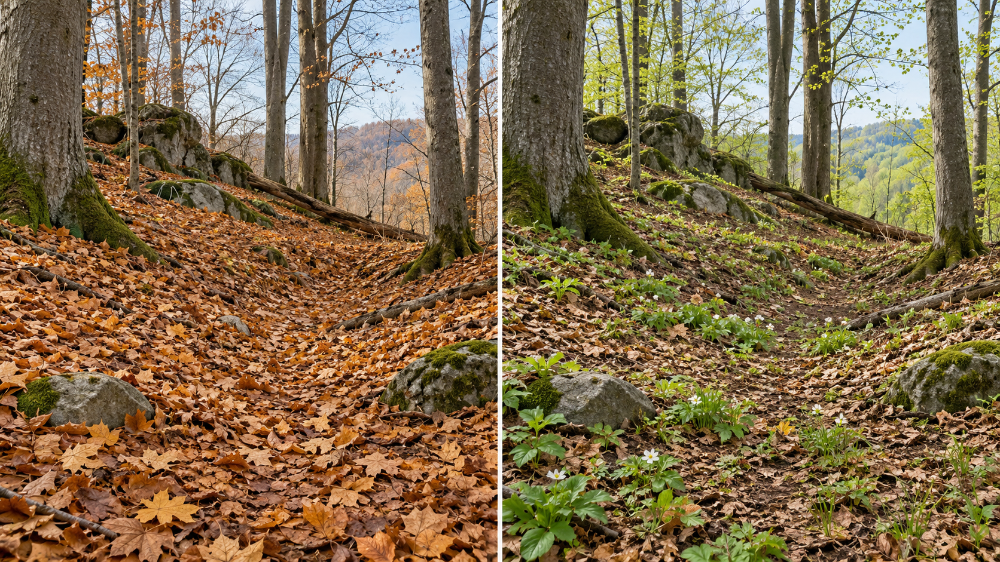
Überprüfe deine erste Vermutung.
Übertrage die Definition in das graue Feld „Totes organisches Material“.
Falllaub besteht aus Stoffen, die zuvor Teil eines Lebewesens waren. Es ist deshalb totes organisches Material.
Kapitel 1 · Lernschritt 2
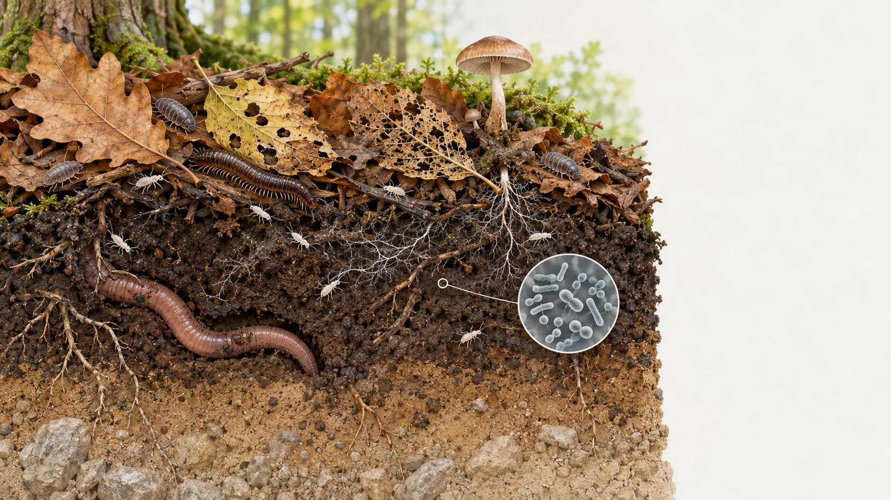
Übertrage die folgende Definition der Destruenten in das graue Feld.
Destruenten sind Zersetzer. Dazu gehören Bodentiere, Pilze und Bakterien. Sie übernehmen beim Abbau unterschiedliche Aufgaben.
Führe jede Gruppe mit ihrer Aufgabe zusammen.
Prüfe zuerst die Zuordnung. Übertrage danach die beiden vollständigen Zeilen 1:1 in die Tabelle.
Freiwillige Vertiefung
Bei einer lokal geöffneten Website blockiert YouTube häufig den eingebetteten Player. Öffne das Video deshalb über die Schaltfläche direkt bei YouTube.
Video auf YouTube öffnen ↗Nenne zwei Lebewesen aus dem Film, die am Abbau beteiligt sind.
Im oder auf dem Waldboden können beispielsweise Regenwürmer, Asseln, Tausendfüßer, Springschwänze, Pilze und Bakterien am Abbau beteiligt sein. Welche davon konntest du im Video beobachten?
Was würde ohne Destruenten geschehen? Erkläre auch eine Folge für Pflanzen.
Kapitel 1 · Lernschritt 4
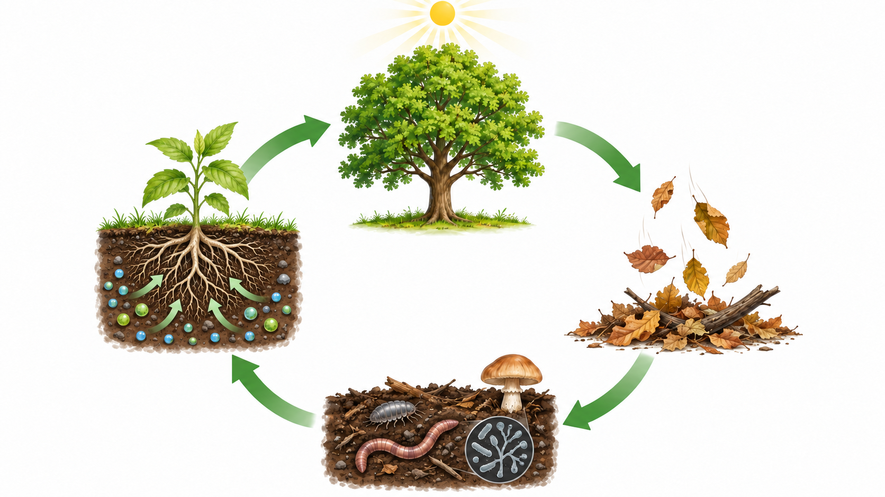
Bringe die Stationen in die richtige Reihenfolge. Ziehe die Karten oder nutze die Pfeiltasten.
Prüfe zuerst die Reihenfolge. Übertrage sie danach und ergänze die Wirkungswörter: fällt ab – zerkleinern – zersetzen – aufnehmen.
Erkläre in eigenen Worten, warum der Wald nicht unter Laub begraben wird. Verwende „Destruenten“ und „Mineralstoffe“.
Du kannst deinen Text hier vorschreiben und mit den Kriterien überarbeiten. Den fertigen Text musst du anschließend noch auf das Arbeitsblatt übertragen.
Kapitel 1 · Lernschritt 5
Stoffe können im vereinfachten Modell zurückgeführt werden. Energie durchläuft das System in eine Richtung.
Ordne die Begriffe den bereits feststehenden Zahlen zu.
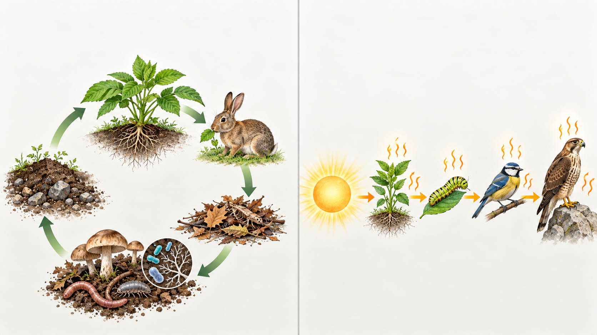
12Alle Begriffe und Erklärungen liegen durcheinander. Ziehe zuerst einen Begriff auf seine Erklärung – oder klicke Begriff und Erklärung nacheinander an. Gebildete Paare erscheinen automatisch in der Tabelle.
Kapitel 2 · Jedes Tier lebt anders
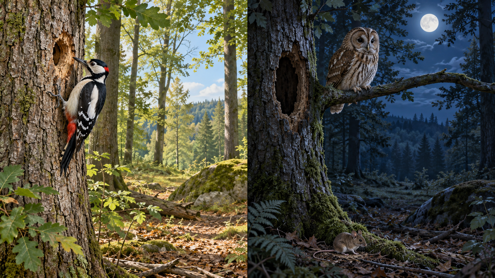
Ordne die Karten „Lebensraum“ oder „ökologische Nische“ zu.
Übertrage die folgende Definition in das graue Feld „Ökologische Nische“.
Die ökologische Nische beschreibt die Gesamtheit der Ansprüche, Nutzungen und Beziehungen eines Lebewesens: Nahrung, Nahrungserwerb, genutzte Strukturen, Aktivitätszeit und Beziehungen zu anderen Lebewesen.
Kapitel 2 · Lernschritt 2
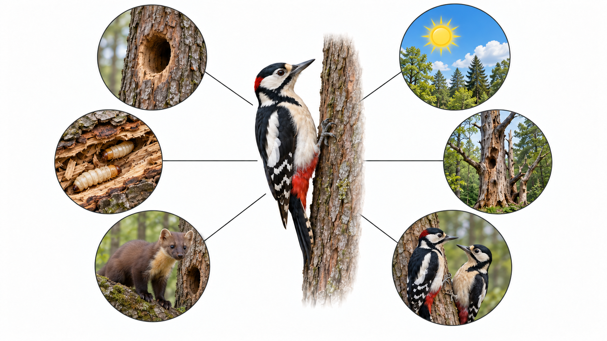
Lies den Steckbrief genau. Sortiere anschließend jede Information in den passenden Nischenbaustein.
Prüfe zuerst deine Sortierung. Übertrage danach die geordneten Informationen in die Tabelle.
Erkläre in eigenen Worten, warum die Spechthöhle allein noch nicht die ökologische Nische beschreibt.
Du kannst deinen Text hier vorschreiben und mit den Kriterien überarbeiten. Den fertigen Text musst du anschließend noch auf das Arbeitsblatt übertragen.
Kapitel 2 · Lernschritt 3
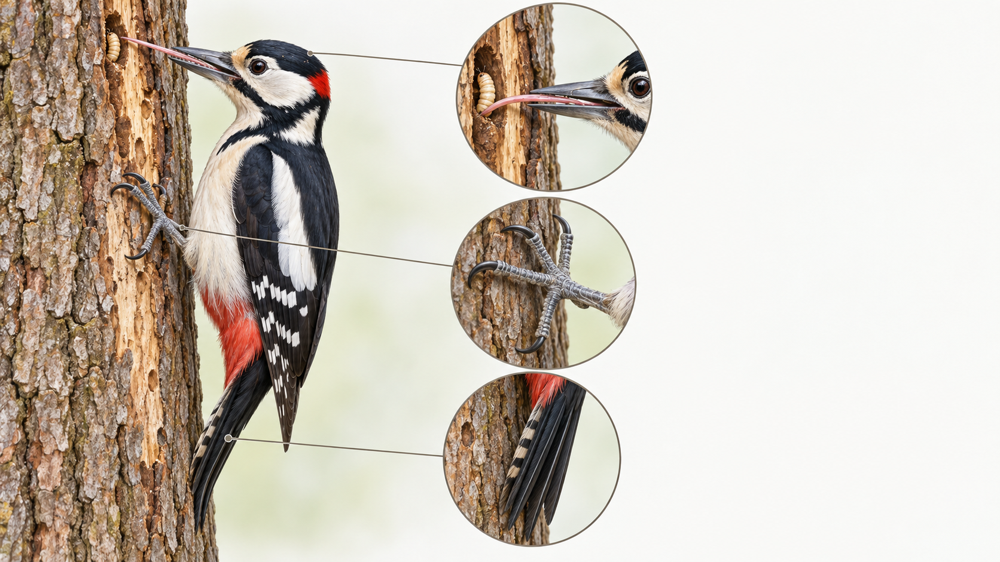
Prüfe zuerst die beiden Ketten zu Schnabel und Zunge. Übertrage sie danach 1:1 in die Tabelle.
Ergänze für „Kletterfüße und Stützschwanz“ selbstständig Handlung und Nutzen. Diese Kette wird in der gemeinsamen Sicherung besprochen und später auf dem angepassten Arbeitsblatt ergänzt.
Kapitel 2 · Lernschritt 4

Sortiere die Karten in das passende Feld.
Erkläre mithilfe der Begriffe „ökologische Nische“, „Aktivität“, „Nahrung“ und „Lebensraum“, warum beide Arten zusammenleben können.
Du kannst deinen Text hier vorschreiben und mit den Kriterien überarbeiten. Den fertigen Text musst du anschließend noch auf das Arbeitsblatt übertragen.
Kapitel 3 · Menschen verändern den Wald
Nach mehreren trockenen Sommern sind viele Fichten abgestorben. Die Gemeinde muss entscheiden, wie die Fläche künftig bewirtschaftet werden soll. Sie kann erneut einen Fichtenreinbestand aus überwiegend gleich alten Fichten anlegen oder schrittweise einen naturnahen Mischwald aus mehreren standortgerechten Baumarten und Altersstufen entwickeln.
Entscheide zunächst ohne weitere Informationen: Was würdest du pflanzen? Begründe deine erste Meinung.
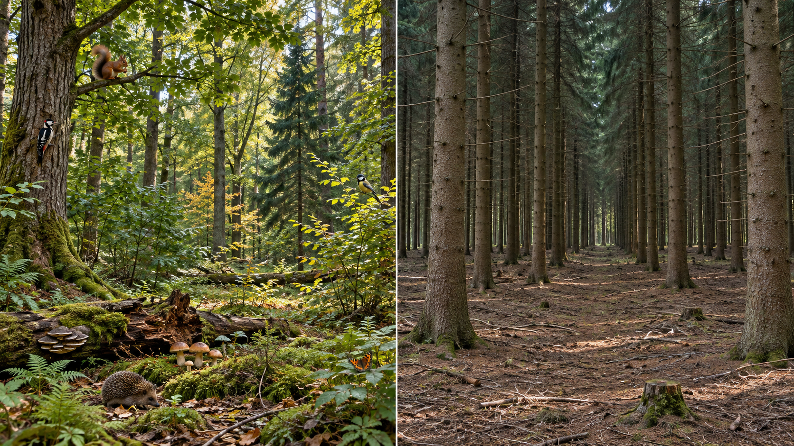
Öffne beide Vergleichskarten und übertrage die Merkmale jeweils in die passende Tabellenspalte.
Fast nur Fichten ähnlichen Alters, gleichmäßige Struktur, Pflege und Holzernte gut planbar. Bei Trockenheit können viele Fichten gleichzeitig geschwächt werden.
Mehrere standortgerechte Baumarten und Altersstufen, unterschiedliche Höhen, Sträucher, einzelne Höhlenbäume und Totholz. Pflege und Holznutzung sind aufwendiger zu planen.
Kapitel 3 · Lernschritt 2
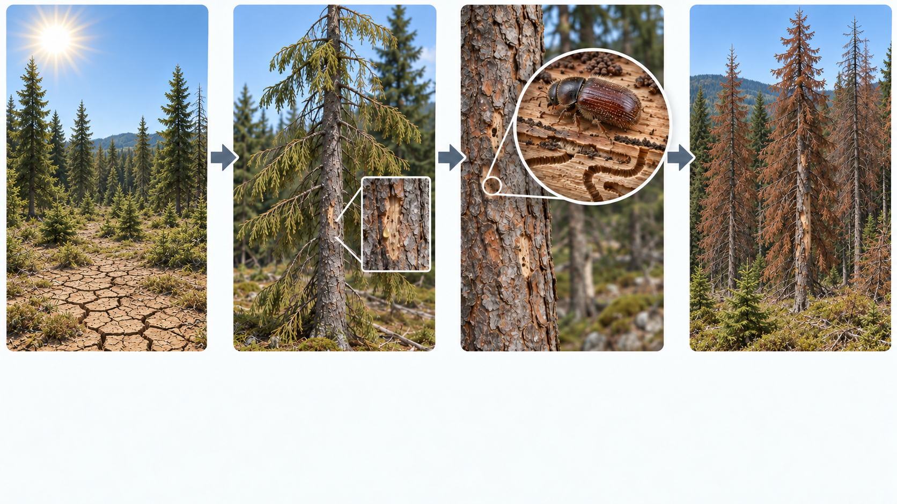
Baue die Wirkungskette in der richtigen Reihenfolge auf.
Prüfe zuerst die Wirkungskette. Übertrage sie danach und verwende passende Wirkungswörter wie „verringert“, „schwächt“, „begünstigt“ und „führt zu“.
Kapitel 3 · Lernschritt 3
Wenn viele Fichten sterben, entstehen Lücken im Kronendach. Mehr Licht, Wärme und Wind erreichen den Boden. Gleichzeitig entsteht mehr Totholz, während lebende alte Bäume und Höhlen seltener werden können.
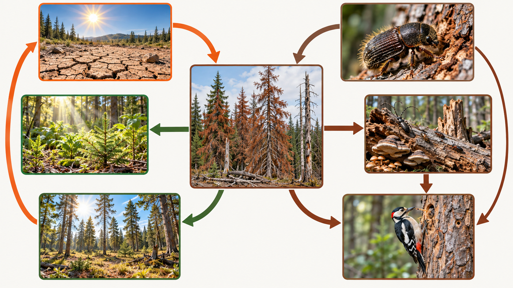
Untersuche nacheinander alle drei Bereiche. Formuliere anschließend für jeden Bereich eine konkrete Folge des Fichtensterbens.
Du kannst die drei Erklärungen hier vorschreiben und überarbeiten. Anschließend musst du sie noch in die drei Zeilen auf dem Arbeitsblatt übertragen.
Kapitel 3 · Lernschritt 4
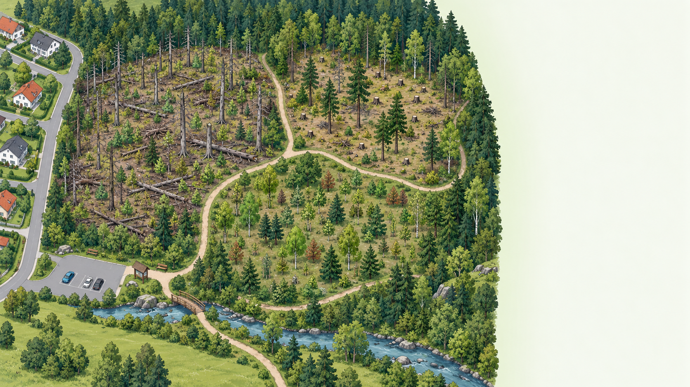
Die Fläche wird schnell wieder überwiegend mit Fichten bepflanzt. Die Anfangskosten sind geringer und die Holzernte bleibt gut planbar.
Über mehrere Jahre entsteht ein standortgerechter Mischwald. Boden, Habitatbäume und ausgewähltes Totholz werden geschützt; die Planung ist zunächst aufwendiger.
Sortiere und prüfe zunächst alle Belegkarten. Übertrage die geprüften Belege danach in die passende Spalte der Kriterien-Tabelle.
Formuliere dein eigenes Urteil: Position, Begründung mit mindestens zwei Kriterien und konkrete Maßnahme.
Du kannst dein Urteil hier vorschreiben und mit den Kriterien überarbeiten. Den fertigen Text musst du anschließend noch auf das Arbeitsblatt übertragen.
Abschluss
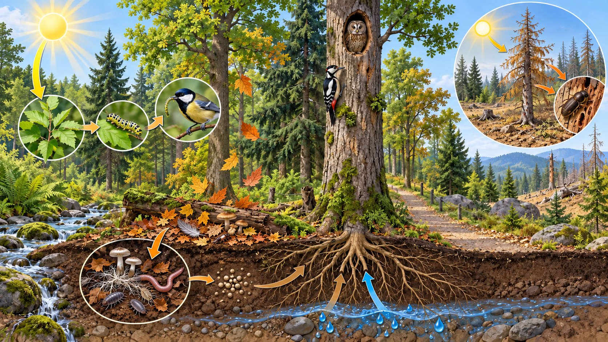
Prüfe beide Arbeitsblätter auf Vollständigkeit. Markiere Fragen für die gemeinsame Sicherung.